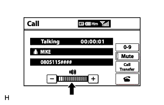
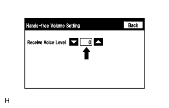

NAVIGATION SYSTEM (for HDD) > The Other Caller's Voice cannot be Heard, is too Quiet, or Distorted |
| 1.CHECK CELLULAR PHONE |
Check if the voice on the other side can be heard using cellular phone.
|
| ||||
| OK | |
| 2.CHECK NAVIGATION SYSTEM |
Check that voice guidance can be heard from the front speaker.
|
| ||||
| OK | |
| 3.CHECK SETTINGS |
|  |
Check if the volume level is low on the "Call" screen.
|
| ||||
| OK | |
| 4.CHECK SETTINGS (OPERATION CHECK) |
|  |
Enter "Hands-free Volume Setting" (Check Handsfree Volume Setting) (Click here).
Check if the "Receive Voice Level" is set to "0".
Check if the "Receive Voice Level" is set to the minimum or maximum level.
|
| ||||
| OK | ||
| ||